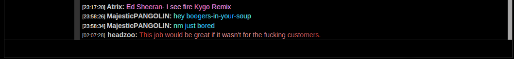
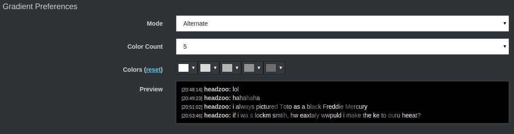
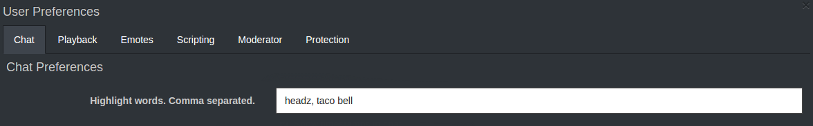
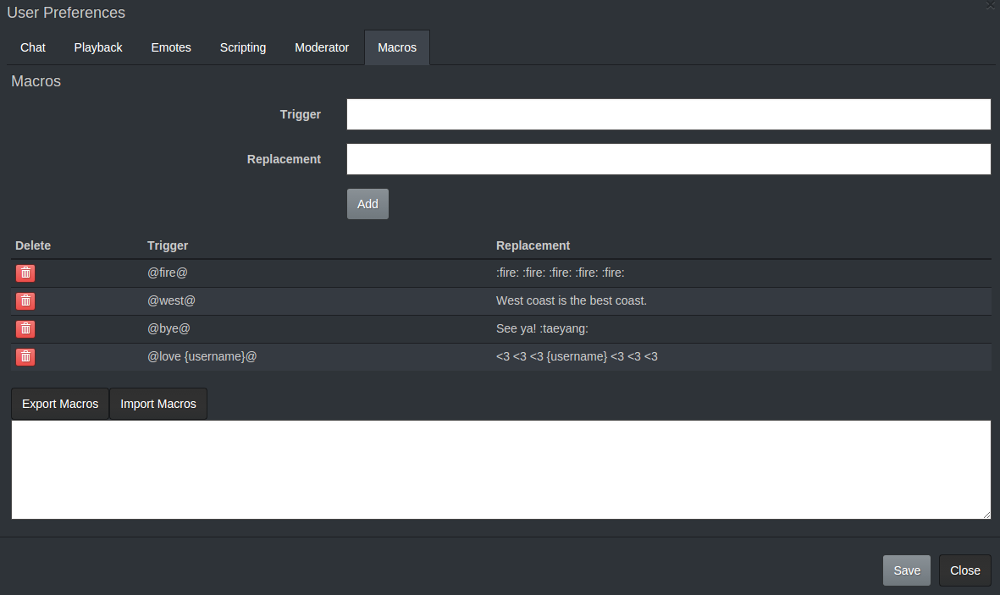
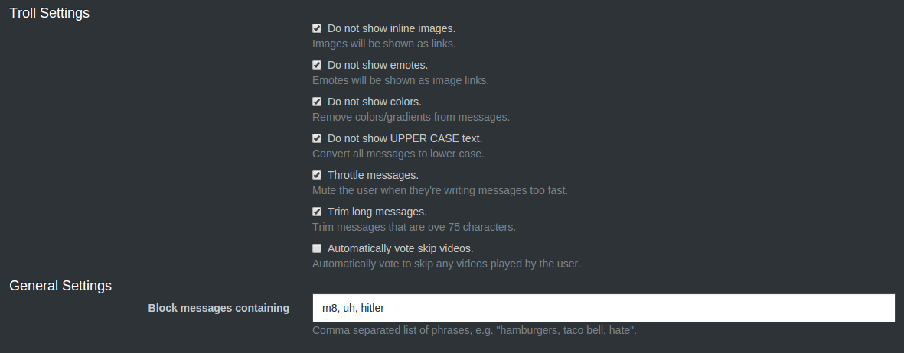
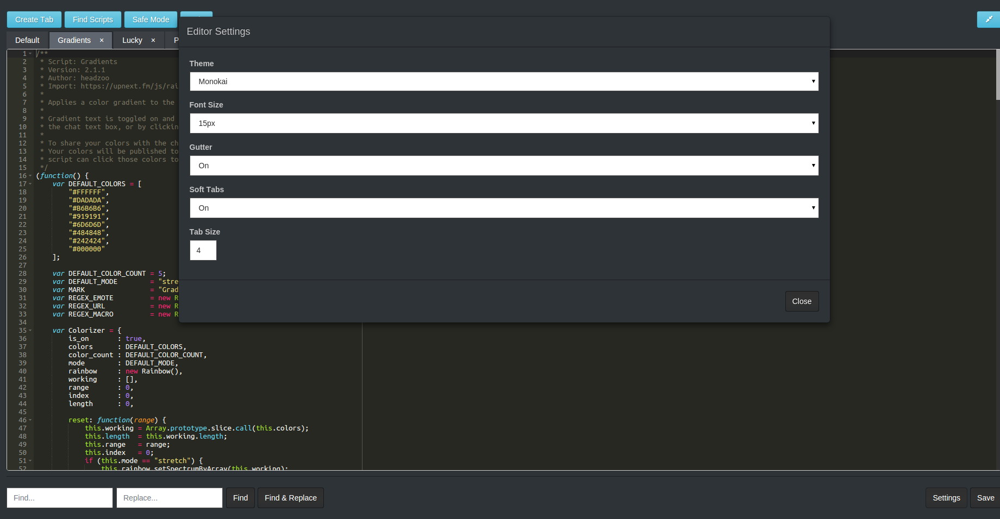

Official user scripting repository and documentation for upnext.fm.
Click the name of the script from the list below to get the code. From upnext.fm, click on
Options and then Scripting. Paste
the code into your scripts box. When adding scripts to your user scripts, you should create a new file for each script.
Click the New File button, which will create a new file where you paste the script.
-
Applies a color gradient to the messages you send.
 Example gradient messages. The options menu.Back to Top -
Lets you do greentext by prefixing your message with the > character.
Back to Top -
Hides channel bots from the users list.
Back to Top -
Highlights messages which contain any of the phrases you configure. Useful to highlight messages containing your nickname or other words of interest.
 The options menu.Back to Top -
Creates a /lucky command, which searches YouTube using the query following the command, and queues the first video found.
Back to Top -
Gives users the option to create macros, or "shortcuts" for long messages.
Once the script is installed go to Options -> Macros to define and edit macros. Macros have two parts: a trigger and a replacement. An example trigger is
"@fire@"with the replacement":fire: :fire: :fire:". Once the macro has been added you can type it into the chat box (e.g."@fire@") and it will be replaced by the replacement.Macros also allow for simple variable interpolation. As an example, you can create a macro with the trigger
"@which {first} {second}@"and the replacement"Choose one: {first} or {second}". To use the macro, type"@which cake pie@"into the chat box, and it will be replaced with"Choose one: cake or pie". The options menu.Back to Top -
Provides protection against trolls and other nasty users.
 The options menu.Back to Top -
Creates a /react command, which displays a random image from replygif.net based on your search term. Now includes auto complete suggestions.
Back to Top -
Tools for upnext.fm script writers. Turns the script editor into a full IDE and adds a "Scripting" button to the site navigation bar.
 The editor with options showing.Back to Top